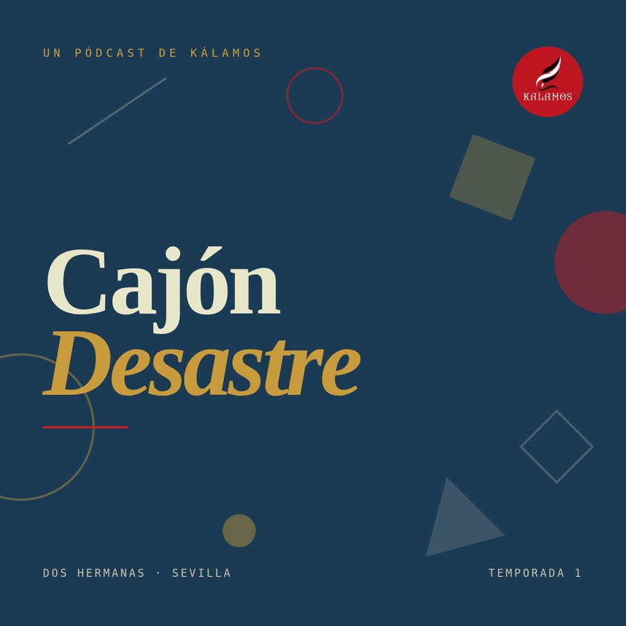
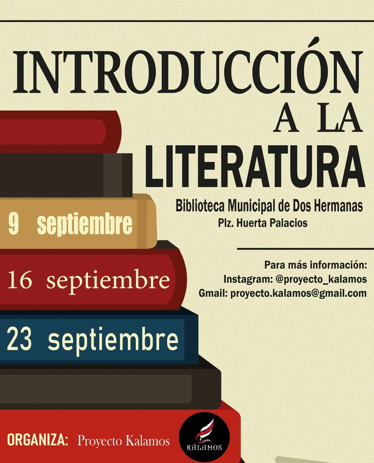

Colectivo cultural y educativo
Cultura y educación en Dos Hermanas
Kálamos es un grupo pequeño. Publicamos una revista mensual, preparamos un pódcast y organizamos talleres y actividades en la ciudad. Todo parte de la misma idea: aquí pasan cosas, y merecen contarse bien.
El Pedante
Nuestra revista de eventos culturales. Cada mes recogemos la agenda de Dos Hermanas —conciertos, talleres, festivales, teatro— y la acompañamos de textos con criterio propio.
No es un tablón de anuncios: opinamos, señalamos lo que falta y celebramos lo que funciona. Se descarga gratis en PDF.
Descargar el último número
Cajón Desastre
Conversaciones sin un tema fijo, que es justo lo que promete el nombre. Cultura, libros, música y lo que se cruce por medio.
Estamos preparando los primeros episodios. Cuando salgan se podrán escuchar aquí y en Spotify, Apple Podcasts e iVoox.
Qué estamos preparando
Talleres y encuentros
Organizamos actividades culturales y educativas en la ciudad, casi siempre en espacios públicos y siempre de entrada libre.
Empezamos con el taller de Introducción a la Literatura en la Biblioteca Municipal. A partir de ahí, seguimos.
Ver actividades
Quiénes somos
Un cálamo es una caña afilada para escribir
Es la herramienta con la que se escribieron los primeros libros. Nos pareció un buen nombre para un grupo que quiere que en Dos Hermanas se lea, se escuche y se hable más.
Somos gente de aquí haciendo cosas aquí. Sin local, sin presupuesto y sin más estructura que las ganas. Si quieres proponernos algo o sumarte, escríbenos.
index.html, buscad nota-borrador).
- Dónde
- Dos Hermanas, Sevilla
- Revista
- El Pedante · mensual
- Pódcast
- Cajón Desastre · en preparación
- @proyecto_kalamos